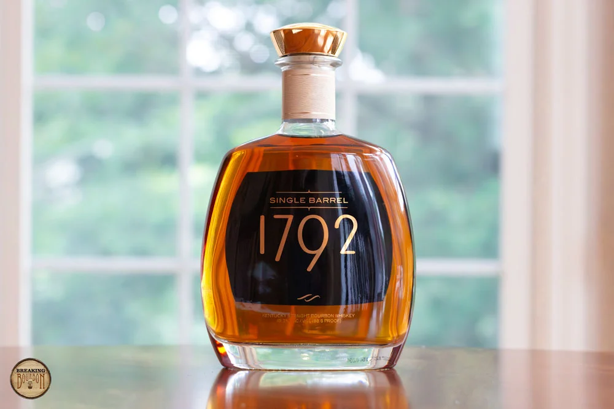

Where this expression fits
The 2023 Single Barrel review provides a specific sampled expression. The label’s fixed 98.6 proof does not eliminate barrel-to-barrel variation.
Assessment scope: 1792 Single Barrel Bourbon (2023 Release); 98.6 proof as reviewed. The 2023 Single Barrel review provides a specific sampled expression. The label’s fixed 98.6 proof does not eliminate barrel-to-barrel variation.
Production and composition
1792 Single Barrel Bourbon (2023 Release): Straight Bourbon; Barton 1792 Distillery. 98.6 proof for the identified review sample; variable-strength releases remain sample-specific.; NAS (Aged at least 4 years per TTB regulations). Composition: Undisclosed. The 2023 Single Barrel review provides a specific sampled expression. The label’s fixed 98.6 proof does not eliminate barrel-to-barrel variation.
Barton 1792 Distillery; Straight Bourbon. Mash / composition: Undisclosed. Age: NAS (Aged at least 4 years per TTB regulations); strength 98.6 proof. These specifications belong to the identified evidence period.
Undisclosed sourcing, blend proportions and barrel details remain unknown; they are not filled in from neighboring labels.
Critical synthesis
This is an editorial synthesis of the credited independent tasting evidence, with the original sample limits retained.
Nose
Butterscotch and fragrant caramel.
Palate
chocolate, orchard fruit and rounded oak.
Finish
lingering fudge and fruit.
Single-source assessment; no cross-review consensus
An unusually coherent progression joins fruit, mature sweetness and a long finish. This excellent judgment belongs to the reviewed single barrel.
Disagreement / dissent
One substantive matched independent sensory source; the score is a reasoned estimate, not a cross-review consensus or a guarantee of other bottles.
- breakingbourbon.com — matched tasting; 1792 Single Barrel Bourbon (2023 Release); 98.6 proof as reviewed. The 2023 Single Barrel review provides a specific sampled expression. The label’s fixed 98.6 proof does not eliminate barrel-to-barrel variation.
Quality assessment
8.1§ / 10. An unusually coherent progression joins fruit, mature sweetness and a long finish. This excellent judgment belongs to the reviewed single barrel.
Native Bourbon execution references. An unusually coherent progression joins fruit, mature sweetness and a long finish. This excellent judgment belongs to the reviewed single barrel.
Confidence: Low–medium; one substantive matched source, sample-specific provisional estimate. One substantive matched independent sensory source; the score is a reasoned estimate, not a cross-review consensus or a guarantee of other bottles.
Value and the buying decision
At $50.00 / 750 mL, Value 8.4 weighs the documented execution and style against these alternatives. An unusually coherent progression joins fruit, mature sweetness and a long finish. This excellent judgment belongs to the reviewed single barrel. Comparison order: same style, parent category, then general whiskey buyer opportunity cost. Knob Creek Small Batch 12 Year Bourbon: $60.00 / 750 mL, Quality 8.0 (Published review price / MSRP — dated review reference); New Riff 8 Year Kentucky Bourbon: $68.00 / 750 mL, Quality 7.8 (Published review price / original MSRP — 2024; dated reference); Old Forester 2011 Birthday Bourbon: $50.00 / 750 mL, Quality 8.0 (Published review price / MSRP — 2011); Knob Creek Blender’s Edition 01 Bourbon: $45.00 / 750 mL, Quality 7.7 (Published review price / MSRP — 2026); King’s Family Wheated Bourbon: $52.38 / 750 mL, Quality 6.9 (Current producer online listing · 750 mL · alternate to NC). Dated references are benchmarks rather than simultaneous live offers. No packaging, rarity or collector premium improves drinking Value.
Reference: $50.00 / 750 mL. Published review price / original MSRP — 2023; dated reference. Dated references do not imply current stock. Single-barrel and batch variation remain explicit; rarity, resale and packaging do not improve drinking Value.
Five buy-price bands · 750 mL equivalent
Editorial shopping guidance tied to the competing bottles below. These are practical budget boundaries, not found offers. The numeric Value assessment and reference price remain unchanged.
Exceptional buy / stock-up
Under $50.00Below this peer-budget floor, 1792 Single Barrel Bourbon (2023 Release) gives its documented profile at a clear discount to Old Forester 2011 Birthday Bourbon ($50.00).
Easy buy / sweet spot
$50.00 to under $60.00The practical attraction is butterscotch and fragrant caramel; compare Knob Creek Small Batch 12 Year Bourbon at $60.00 for the alternative described below.
Fair buy
$60.00 to under $70.00At this level, preference must decide the purchase. New Riff 8 Year Kentucky Bourbon ($68.00) supplies fruit, custard and caramel.
Think twice / conditional
$70.00 to under $200.00The price increasingly competes with New Riff 8 Year Kentucky Bourbon at $68.00. Pay the extra only for this expression’s documented style and sample scope, rather than age or rarity alone.
Pass / trade up
$200.00 and aboveCompare New Riff 8 Year Kentucky Bourbon ($68.00), then move to its closest better-developed peers. The subject’s retained Quality is 8.1; packaging and collector demand supply no drinking premium.
What actually competes with this bottle?
These alternatives are chosen for this expression’s style, strength, maturity, documented quality and purchase role. Every price below retains its own dated reference; none implies current stock.
| Bottle | Proof / age | 750 mL reference | Why consider it |
|---|---|---|---|
| Knob Creek Small Batch 12 Year Bourbon | 100.0 · 12 Years | $60.00 Published review price / MSRP — dated review reference | $10.00 more; 100 proof versus 98.6. Caramel and aged oak frame dark fruit. This is a drinking alternative, with its own recipe and source scope. |
| New Riff 8 Year Kentucky Bourbon | 100.0 · 8 Years | $68.00 Published review price / original MSRP — 2024; dated reference | $18.00 more; 100 proof versus 98.6. Fruit, custard and caramel. This is a drinking alternative, with its own recipe and source scope. |
| Old Forester 2011 Birthday Bourbon | 98.0 · 12 Years | $50.00 Published review price / MSRP — 2011 | The same reference price; 98 proof versus 98.6. Rich classic aromas precede sugar-cane-like sweetness. This is a drinking alternative, with its own recipe and source scope. |
| Knob Creek Blender’s Edition 01 Bourbon | 106.0 · 10 Years | $45.00 Published review price / MSRP — 2026 | $5.00 less; 106 proof versus 98.6. Roasted nuts and caramel open. This is a drinking alternative, with its own recipe and source scope. |
| King’s Family Wheated Bourbon | 100 · Catalog ≥6 years; online listing 5 years | $52.38 Current producer online listing · 750 mL · alternate to NC | $2.38 more; 100 proof versus 98.6. 6.9 reflects favorable exact-proof panel evidence and good integration, above the Maker’s / Bulleit midpoint. Limited complexity evidence and age / batch uncertainty restrain the score below excellent. This is a drinking alternative, with its own recipe and source scope. |
How to approach this expression
Serving recommendations are editorial inferences from this expression’s documented sensory profile and strength; they are not a claim of first-hand cocktail testing.
Neat: follow the development
1792 Single Barrel Bourbon (2023 Release) is 98.6 proof. Use a small tulip glass and compare the opening with the middle: butterscotch and fragrant caramel. The key question is whether that character persists as chocolate, orchard fruit and rounded oak.
Water: adjust in small steps
At 98.6 proof, taste neat before adding water; dilution is an experiment, not an improvement guaranteed by the label. The relevant finishing behavior is lingering fudge and fruit. Stop when the mid-palate loses definition or dry wood begins to dominate.
Old Fashioned: match the sweetness
The documented middle is chocolate, orchard fruit and rounded oak. Begin with less sugar than usual and taste before adding more. At 98.6 proof, restrained dilution preserves the body; the cocktail should still taste of 1792 Single Barrel Bourbon (2023 Release).
Rocks or a restrained Sour
A separate pour over one large cube lets you track the change from butterscotch and fragrant caramel toward lingering fudge and fruit. For a Sour, balance citrus and sugar in a small trial; the documented finish is the part most easily obscured.
Sources and scope
Independent sensory evidence
- Breaking Bourbon — matched expression; see exact review/sample scope above.
Producer specifications / background
- Producer background — intended style/specifications only; not independent sensory evidence. Unless explicitly checked in the identity note, this is a further-reading link.
Price evidence
Published review price / original MSRP — 2023; dated reference. $50.00 / 750 mL; $50.00 / 750 mL equivalent.
Bottle photograph © breakingbourbon.com; original exact-sample review. Image stored locally as assets/bottles/1792-single-barrel-bourbon-2023-release.webp. 1792 Single Barrel Bourbon (2023 Release); 98.6 proof as reviewed. The 2023 Single Barrel review provides a specific sampled expression. The label’s fixed 98.6 proof does not eliminate barrel-to-barrel variation.